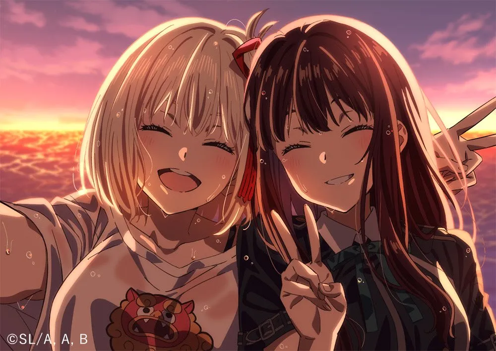

Chisato Nishikigi (錦木 千束 Nishikigi Chisato) is the main protagonist of the original anime series, Lycoris Recoil. She is the partner of Takina Inoue. Said to be the strongest Lycoris of all time. She enjoys solving private-sector problems that the DA would not address. Unlike other Lycoris, Chisato is heavily committed to using exclusively non-lethal means to neutralize her opponents.
Takina Inoue (井ノ上 たきな Inoue Takina) is the deuteragonist of the original anime series, Lycoris Recoil. She was previously the partner of Fuki Harukawa, but due to disobeying orders on a mission, she was transferred to Café LycoReco, where she is now partnered with Chisato Nishikigi. Previously an exceptional Lycoris, but for some reason, she now works at Café LycoReco. A realistic person with a distaste for inefficiency, she can be dissatisfied with Chisato, who is not a typical Lycoris. She wants to see good results in her job at LycoReco.
Mizuki Nakahara (中原 ミズキ Nakahara Mizuki) is one of the five main characters of the original anime series, Lycoris Recoil. She is a former member of DA Intelligence Division, currently working at Café LycoReco. Previously a DA Intelligence Division member, she has been with Chisato for a long time. In her desperate desire to marry, she took the job at the café in hopes of meeting her special someone. Her routine includes a nightly drink while reading wedding magazines.
